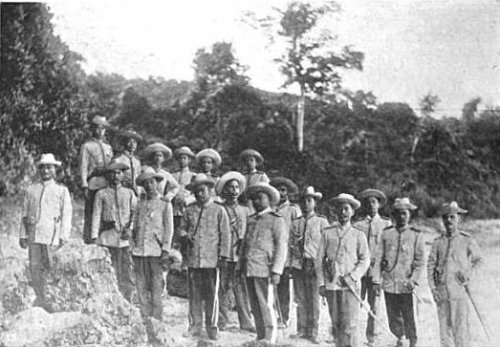
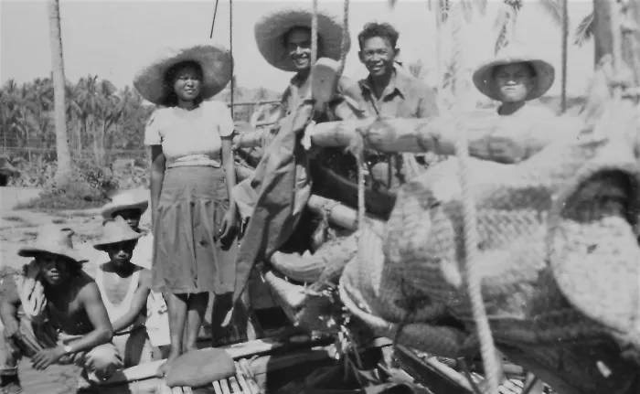

Loading...

Spanish Period

Separation
Daet Revolt

The first guerrilla encounter in the Philippines during the second world war in the Pacific occurred on December 18, 1941 - 11 days after the Japanese bombing of Pearl Harbor in Hawaii on Dec. 7, 1941 and 10 days after the attack on Clark Airbase in Pampanga on Dec. 8, 1941 - at Laniton, Basud, Camarines Norte when the Vinzons guerrilla group with some elements of USAFFE units engaged the vanguard of the Japanese Imperial Army advancing towards Daet, the capital town.
First Guerrilla Encounter

The general headquarters of Philippine Commonwealth Army started their operations on January 3, 1942. The Philippine Constabulary in Camarines Norte was then established on October 28, 1944. When the U.S. liberation forces returned to the province in 1945, they helped the local Filipino troops and Bicolano guerrillas in the liberation from the Japanese Imperial forces.